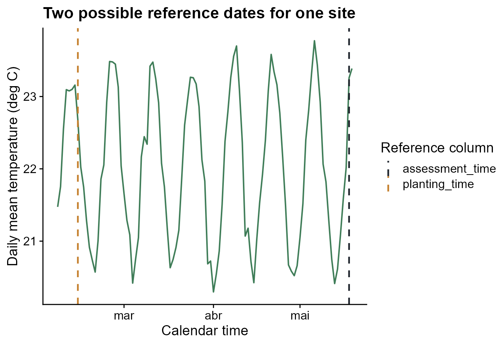
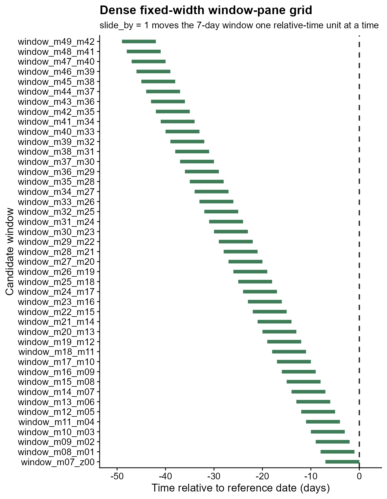
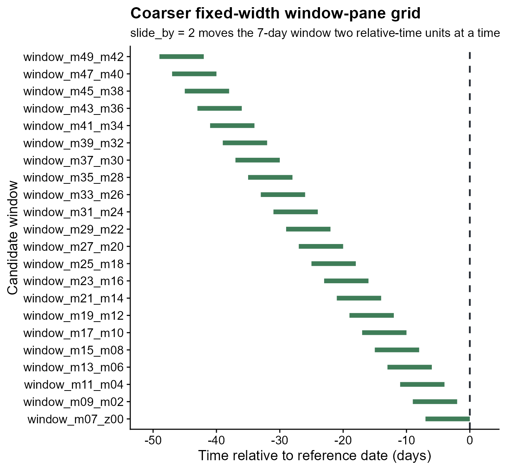
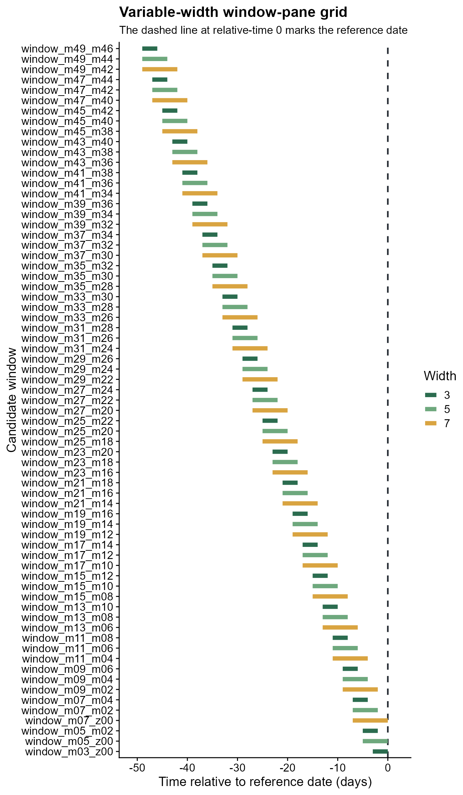
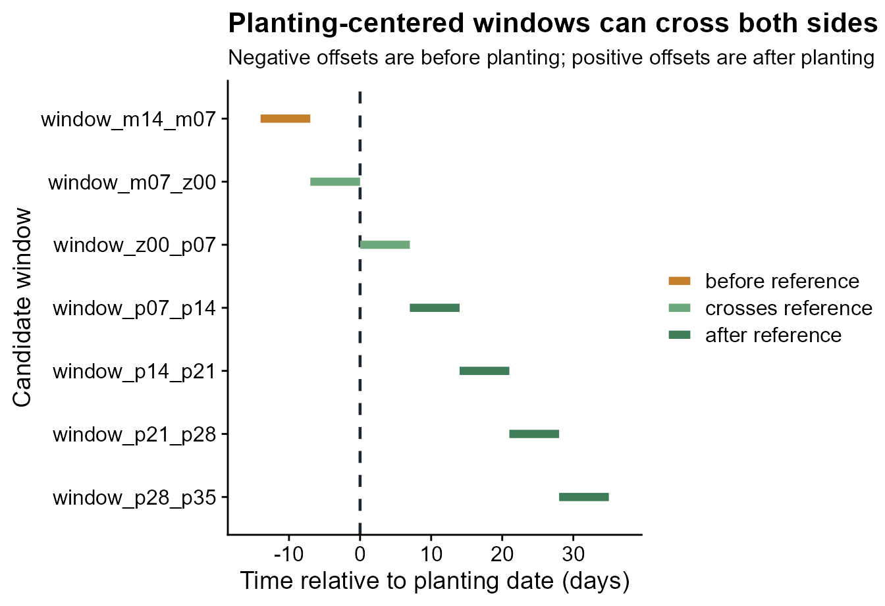
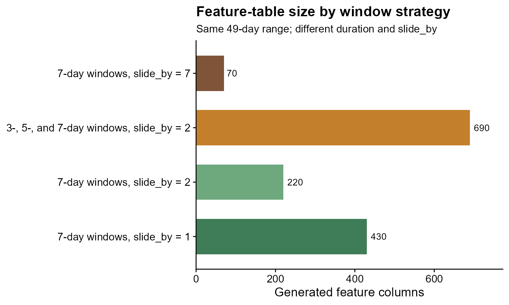
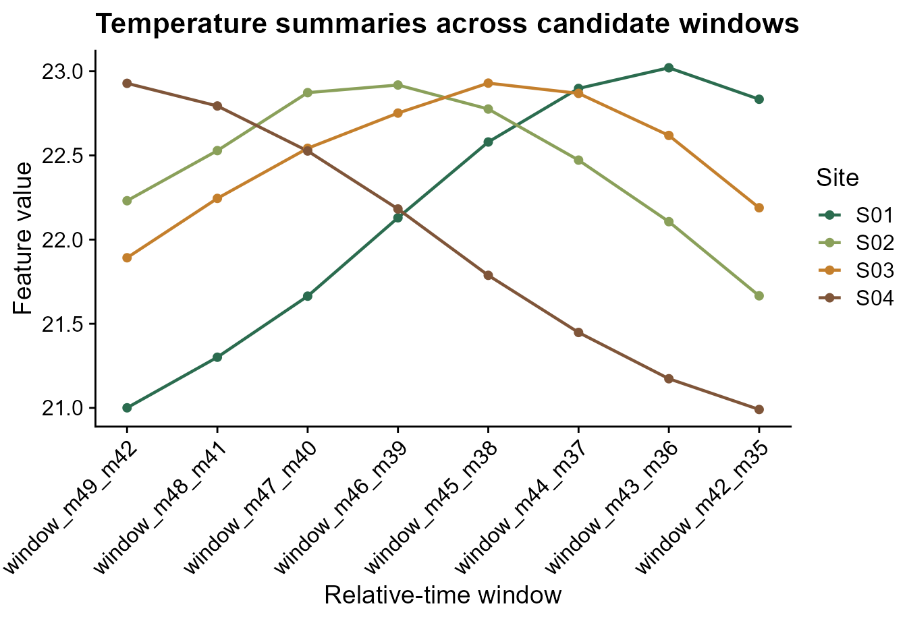

Run this setup first. It loads the packages used in the article and sets figure options.
Why window-pane?
Plant disease symptoms are often influenced by weather near a biological event. The event may be planting, flowering, inoculation, disease assessment, or another reference date. The hard part is that the most informative period is usually unknown. A window-pane workflow solves this by generating many candidate relative-time windows, summarizing weather inside each one, and comparing the resulting features.
Main idea. Choose a reference date, decide whether candidate windows should be before, after, or around that date, and summarize weather inside each candidate window.
The reference date does not have to be the disease assessment date. It can also be planting, flowering, inoculation, harvest, or any timestamp that makes sense for the biology of the system.
Step 1: Load bundled site-level weather and disease data
This tutorial starts from a bundled demo dataset with 10 sites. Each
site has one daily weather time series and one disease assessment. That
structure mirrors the modeling unit used by windcut: one
row of disease data is paired with the weather history from the same
site.
data(window_pane_demo_data)
weather <- window_pane_demo_data$weather
assessments <- window_pane_demo_data$assessments
nrow(weather)
#> [1] 1800
knitr::kable(assessments)| site_id | assessment_id | assessment_time | response_type | disease_intensity | planting_time |
|---|---|---|---|---|---|
| S01 | S01 | 2024-05-18 | percent | 75.2 | 2024-02-14 |
| S02 | S02 | 2024-05-07 | percent | 59.2 | 2024-02-03 |
| S03 | S03 | 2024-05-20 | percent | 53.9 | 2024-02-19 |
| S04 | S04 | 2024-04-12 | percent | 71.7 | 2024-01-16 |
| S05 | S05 | 2024-04-29 | percent | 80.9 | 2024-02-02 |
| S06 | S06 | 2024-04-15 | percent | 87.2 | 2024-01-14 |
| S07 | S07 | 2024-04-25 | percent | 84.0 | 2024-01-31 |
| S08 | S08 | 2024-04-23 | percent | 83.2 | 2024-01-22 |
| S09 | S09 | 2024-04-13 | percent | 59.4 | 2024-01-12 |
| S10 | S10 | 2024-05-05 | percent | 72.6 | 2024-02-10 |
The weather object is already daily. If your own data
are hourly, use aggregate_weather_daily() before this step
and choose the daily statistics that match each weather variable. Daily
column names keep the statistic in the name, such as
daily_mean_temp and daily_sum_rain.
The site_id column is important because it lets
window_pane() match each assessment to the correct weather
series. The assessment_time and planting_time
columns are both valid reference dates, but they answer different
questions.
Step 2: Visualize the possible reference dates
Before defining windows, it helps to see what the reference dates
mean on the weather timeline. The plot below uses one site and draws two
vertical reference lines: planting and assessment. Later, the same
relative-time grid will be placed relative to either one of these
columns by changing reference_col.
example_site <- assessments$site_id[1]
example_assessment <- assessments %>% filter(site_id == example_site)
example_weather <- weather %>% filter(site_id == example_site)
plot_start <- example_assessment$planting_time - 7 * 86400
plot_end <- example_assessment$assessment_time + 1 * 86400
plot_weather <- example_weather %>%
filter(time >= plot_start, time <= plot_end)
reference_dates <- data.frame(
reference_col = c("planting_time", "assessment_time"),
reference_time = c(
example_assessment$planting_time,
example_assessment$assessment_time
)
)
ggplot(plot_weather, aes(time, daily_mean_temp)) +
geom_line(color = "#3f7d58", linewidth = 0.7) +
geom_vline(
data = reference_dates,
aes(xintercept = reference_time, color = reference_col),
linetype = "dashed",
linewidth = 0.8
) +
scale_color_manual(values = c(planting_time = "#c47f2c", assessment_time = "#20262e")) +
labs(
title = "Two possible reference dates for one site",
x = "Calendar time",
y = "Daily mean temperature (deg C)",
color = "Reference column"
) +
cowplot::theme_half_open()
In make_windows(), offsets are measured relative to the
selected reference date. Negative offsets are before the reference date,
0 is the reference date, and positive offsets are after the
reference date. Window labels describe interval boundaries. For example,
window_m05_z00 means a 5-day interval that ends at the
selected reference date, while window_p01_p06 means a 5-day
interval that begins 1 day after the reference date.
Step 3: Create a fixed-width window pane
A fixed-width window pane uses one duration and slides it through the
relative-time range. Here every candidate window is 7 days long and
occurs before or on the selected reference date. To match the 49-day
span used later for planting-centered windows, this grid runs from 49
days before assessment to the assessment date itself. The first window
is 49 to 43 days before the reference date, the next is 48 to 42 days
before the reference date, then 47 to 41 days before the reference date,
and so on. That default behavior is controlled by
slide_by = 1.
fixed_windows <- make_windows(
min_offset = -49,
max_offset = 0,
width = 7
)
knitr::kable(head(fixed_windows, 10))| relative_start | relative_end | width | label |
|---|---|---|---|
| -49 | -42 | 7 | window_m49_m42 |
| -48 | -41 | 7 | window_m48_m41 |
| -47 | -40 | 7 | window_m47_m40 |
| -46 | -39 | 7 | window_m46_m39 |
| -45 | -38 | 7 | window_m45_m38 |
| -44 | -37 | 7 | window_m44_m37 |
| -43 | -36 | 7 | window_m43_m36 |
| -42 | -35 | 7 | window_m42_m35 |
| -41 | -34 | 7 | window_m41_m34 |
| -40 | -33 | 7 | window_m40_m33 |
When a dense one-day slide creates more candidate windows than
needed, increase slide_by. In the next grid, the same 7-day
window moves two relative-time units at a time: 49 to 43 days before the
reference date, then 47 to 41 days before the reference date, then 45 to
39 days before the reference date.
coarser_windows <- make_windows(
min_offset = -49,
max_offset = 0,
width = 7,
slide_by = 2
)
knitr::kable(head(coarser_windows, 10))| relative_start | relative_end | width | label |
|---|---|---|---|
| -49 | -42 | 7 | window_m49_m42 |
| -47 | -40 | 7 | window_m47_m40 |
| -45 | -38 | 7 | window_m45_m38 |
| -43 | -36 | 7 | window_m43_m36 |
| -41 | -34 | 7 | window_m41_m34 |
| -39 | -32 | 7 | window_m39_m32 |
| -37 | -30 | 7 | window_m37_m30 |
| -35 | -28 | 7 | window_m35_m28 |
| -33 | -26 | 7 | window_m33_m26 |
| -31 | -24 | 7 | window_m31_m24 |
The comparison below shows the practical effect of
slide_by. The window width is still 7 days in both grids,
but a larger slide produces fewer, more widely spaced candidate
windows.
slide_comparison <- data.frame(
slide_by = c("slide_by = 1", "slide_by = 2"),
candidate_windows = c(nrow(fixed_windows), nrow(coarser_windows))
)
knitr::kable(slide_comparison)| slide_by | candidate_windows |
|---|---|
| slide_by = 1 | 43 |
| slide_by = 2 | 22 |
The first plot shows the dense fixed-width grid. The dashed line at relative-time 0 is the reference date. Segments to the left of that line are before the reference event.
plot_window_pane(
fixed_windows,
max_windows = Inf,
color_by = "none",
title = "Dense fixed-width window-pane grid",
subtitle = "slide_by = 1 moves the 7-day window one relative-time unit at a time",
xlab = "Time relative to reference date (days)"
)
The next plot shows the same 7-day duration with a larger sliding step. The grid is smaller because the starting relative-time position jumps by two units instead of one.
plot_window_pane(
coarser_windows,
max_windows = Inf,
color_by = "none",
title = "Coarser fixed-width window-pane grid",
subtitle = "slide_by = 2 moves the 7-day window two relative-time units at a time",
xlab = "Time relative to reference date (days)"
)
Use fixed-width windows when the exposure duration is already biologically defendable. For example, a 7-day period may be meaningful if infection requires several consecutive days of favorable moisture and temperature.
Step 4: Create a variable-width window pane
A variable-width window pane scans both timing and duration. Instead
of using a single duration, give width several values. Here
the workflow tries 3-, 5-, and 7-day windows within the same 49-day
assessment-centered range. The window starts move two relative-time
units at a time because slide_by = 2.
variable_windows <- make_windows(
min_offset = -49,
max_offset = 0,
width = c(3, 5, 7),
slide_by = 2
)
knitr::kable(head(variable_windows, 10))| relative_start | relative_end | width | label |
|---|---|---|---|
| -49 | -46 | 3 | window_m49_m46 |
| -49 | -44 | 5 | window_m49_m44 |
| -49 | -42 | 7 | window_m49_m42 |
| -47 | -44 | 3 | window_m47_m44 |
| -47 | -42 | 5 | window_m47_m42 |
| -47 | -40 | 7 | window_m47_m40 |
| -45 | -42 | 3 | window_m45_m42 |
| -45 | -40 | 5 | window_m45_m40 |
| -45 | -38 | 7 | window_m45_m38 |
| -43 | -40 | 3 | window_m43_m40 |
The variable-width plot uses color to show duration. Shorter and
longer windows can start at the same relative-time position, but they
cover different portions of the weather history before the same
reference date. The gap between adjacent starting positions shows the
effect of slide_by.
plot_window_pane(
variable_windows,
max_windows = Inf,
color_by = "width",
title = "Variable-width window-pane grid",
subtitle = "The dashed line at relative-time 0 marks the reference date",
xlab = "Time relative to reference date (days)"
)
The choice between fixed and variable windows should come from the disease biology. Fixed windows are simpler and easier to interpret. Variable windows are broader and may be better for discovery, especially early in a study.
Step 5: Generate features using assessment dates
window_pane() applies a window grid to every site. For
each assessment row, it finds the matching weather series, places each
candidate window relative to the chosen reference_col, and
returns one wide feature table. In this first call, the windows are
relative to assessment_time.
The statistics argument controls how weather is
summarized inside each candidate window. A named list is useful when
different variables need different summaries. In this example, the
weather columns keep the names already present in the daily table, such
as daily_mean_temp, daily_mean_rh, and
daily_sum_rain. The same names are used in
statistics, so the output feature names make the full
calculation explicit.
daily_weather_cols <- c(
"daily_mean_temp",
"daily_mean_rh",
"daily_sum_rain",
"daily_sum_leaf_wetness"
)
summary_statistics <- list(
daily_mean_temp = c("mean", "min", "max"),
daily_mean_rh = list(mean = "mean", median = "median", days_at_or_above_90 = count_at_or_above(90)),
daily_sum_rain = c("sum", "max"),
daily_sum_leaf_wetness = "sum"
)
assessment_features <- window_pane(
weather = weather,
assessments = assessments,
windows = fixed_windows,
reference_col = "assessment_time",
id_col = "site_id",
response_col = "disease_intensity",
weather_cols = daily_weather_cols,
statistics = summary_statistics
)
assessment_feature_overview <- data.frame(
rows = nrow(assessment_features),
columns = ncol(assessment_features)
)
assessment_feature_names <- data.frame(
feature = names(assessment_features %>% select(1:12))
)
knitr::kable(assessment_feature_overview)| rows | columns |
|---|---|
| 10 | 433 |
| feature |
|---|
| site_id |
| assessment_time |
| disease_intensity |
| n_obs_window_m49_m42 |
| daily_mean_temp_mean_window_m49_m42 |
| daily_mean_temp_min_window_m49_m42 |
| daily_mean_temp_max_window_m49_m42 |
| daily_mean_rh_mean_window_m49_m42 |
| daily_mean_rh_median_window_m49_m42 |
| daily_mean_rh_days_at_or_above_90_window_m49_m42 |
| daily_sum_rain_sum_window_m49_m42 |
| daily_sum_rain_max_window_m49_m42 |
The first columns identify the site, the reference date, and the
response. The remaining columns are weather summaries. For example,
daily_mean_temp_mean_window_m07_z00 is the mean of
daily_mean_temp over the 7-day interval ending at the
assessment date.
The table below shows the first rows and first feature columns of
assessment_features. The full object has more
weather-summary columns than shown here, but this view is enough to see
the shape of the output: one row per site and one column per candidate
weather predictor.
| site_id | assessment_time | disease_intensity | n_obs_window_m49_m42 | daily_mean_temp_mean_window_m49_m42 | daily_mean_temp_min_window_m49_m42 | daily_mean_temp_max_window_m49_m42 | daily_mean_rh_mean_window_m49_m42 | daily_mean_rh_median_window_m49_m42 | daily_mean_rh_days_at_or_above_90_window_m49_m42 | daily_sum_rain_sum_window_m49_m42 | daily_sum_rain_max_window_m49_m42 |
|---|---|---|---|---|---|---|---|---|---|---|---|
| S01 | 2024-05-18 | 75.2 | 7 | 21.00065 | 20.29792 | 22.37833 | 80.53167 | 80.66500 | 0 | 19.59 | 10.33 |
| S02 | 2024-05-07 | 59.2 | 7 | 22.23077 | 20.87000 | 23.49083 | 79.87208 | 79.93833 | 0 | 16.86 | 6.96 |
| S03 | 2024-05-20 | 53.9 | 7 | 21.89202 | 20.77125 | 23.45917 | 79.92673 | 80.18958 | 0 | 10.62 | 8.22 |
| S04 | 2024-04-12 | 71.7 | 7 | 22.92827 | 22.51333 | 23.30167 | 79.90863 | 80.13875 | 0 | 8.90 | 4.77 |
| S05 | 2024-04-29 | 80.9 | 7 | 22.26113 | 20.56792 | 23.83250 | 79.65089 | 79.84375 | 0 | 5.99 | 1.63 |
| S06 | 2024-04-15 | 87.2 | 7 | 22.29268 | 21.09167 | 23.70542 | 79.99827 | 80.13750 | 0 | 13.36 | 7.83 |
Step 6: Generate features using planting dates
Planting is positioned much earlier in the weather series than assessment, so it deserves its own window grid. Around assessment, the usual question is often “what happened before disease was measured?” Around planting, the question may include weather before planting and weather after planting, because both can be biologically meaningful.
The next grid uses 7-day windows and moves one week at a time.
Negative windows summarize weather before planting, the window that
starts at 0 includes the planting date, and positive
windows summarize early-season weather after planting.
planting_windows <- make_windows(
min_offset = -14,
max_offset = 35,
width = 7,
slide_by = 7,
reference_col = "planting_time"
)
knitr::kable(planting_windows)| relative_start | relative_end | width | label |
|---|---|---|---|
| -14 | -7 | 7 | window_m14_m07 |
| -7 | 0 | 7 | window_m07_z00 |
| 0 | 7 | 7 | window_z00_p07 |
| 7 | 14 | 7 | window_p07_p14 |
| 14 | 21 | 7 | window_p14_p21 |
| 21 | 28 | 7 | window_p21_p28 |
| 28 | 35 | 7 | window_p28_p35 |
The plot below makes the reference-date logic visible. The dashed line is planting. Segments to the left are pre-planting windows; segments to the right are post-planting windows.
plot_window_pane(
planting_windows,
max_windows = Inf,
color_by = "timing",
title = "Planting-centered windows can cross both sides of the reference date",
subtitle = "Negative offsets are before planting; positive offsets are after planting",
xlab = "Time relative to planting date (days)"
)
Now window_pane() uses planting_windows
with reference_col = "planting_time". The weather table and
summary statistics stay the same; only the biological clock and the
candidate windows change.
planting_features <- window_pane(
weather = weather,
assessments = assessments,
windows = planting_windows,
reference_col = "planting_time",
id_col = "site_id",
response_col = "disease_intensity",
weather_cols = daily_weather_cols,
statistics = summary_statistics
)
knitr::kable(
planting_features %>%
select(site_id, planting_time, disease_intensity) %>%
slice_head(n = 5)
)| site_id | planting_time | disease_intensity |
|---|---|---|
| S01 | 2024-02-14 | 75.2 |
| S02 | 2024-02-03 | 59.2 |
| S03 | 2024-02-19 | 53.9 |
| S04 | 2024-01-16 | 71.7 |
| S05 | 2024-02-02 | 80.9 |
This is useful when the relevant biological clock starts at planting rather than assessment. For example, early-season weather may affect plant establishment, host susceptibility, or the amount of inoculum available later.
Step 7: Compare feature-table size across window strategies
Different window strategies create different numbers of candidate
predictors. For a fair comparison, the four grids below use the same
49-day assessment-centered range introduced in Step 3: -49
to 0. This also matches the total length of the
planting-centered grid above, where 35 - (-14) = 49. The
only differences are the window durations and the sliding step. This
lets the user see how a short sliding step creates a dense feature
table, while a longer sliding step creates a smaller, more widely spaced
one.
comparison_sparse_windows <- make_windows(
min_offset = -49,
max_offset = 0,
width = 7,
slide_by = 7
)
comparison_dense_features <- window_pane(
weather = weather,
assessments = assessments,
windows = fixed_windows,
reference_col = "assessment_time",
id_col = "site_id",
response_col = "disease_intensity",
weather_cols = daily_weather_cols,
statistics = summary_statistics
)
comparison_coarser_features <- window_pane(
weather = weather,
assessments = assessments,
windows = coarser_windows,
reference_col = "assessment_time",
id_col = "site_id",
response_col = "disease_intensity",
weather_cols = daily_weather_cols,
statistics = summary_statistics
)
comparison_variable_features <- window_pane(
weather = weather,
assessments = assessments,
windows = variable_windows,
reference_col = "assessment_time",
id_col = "site_id",
response_col = "disease_intensity",
weather_cols = daily_weather_cols,
statistics = summary_statistics
)
comparison_sparse_features <- window_pane(
weather = weather,
assessments = assessments,
windows = comparison_sparse_windows,
reference_col = "assessment_time",
id_col = "site_id",
response_col = "disease_intensity",
weather_cols = daily_weather_cols,
statistics = summary_statistics
)
feature_table_sizes <- data.frame(
window_strategy = c(
"7-day windows, slide_by = 1",
"7-day windows, slide_by = 2",
"3-, 5-, and 7-day windows, slide_by = 2",
"7-day windows, slide_by = 7"
),
relative_range = rep("-49 to 0 days", 4),
total_length_days = rep(49, 4),
candidate_windows = c(
nrow(fixed_windows),
nrow(coarser_windows),
nrow(variable_windows),
nrow(comparison_sparse_windows)
),
generated_features = c(
sum(grepl("_window_", names(comparison_dense_features))),
sum(grepl("_window_", names(comparison_coarser_features))),
sum(grepl("_window_", names(comparison_variable_features))),
sum(grepl("_window_", names(comparison_sparse_features)))
)
)
knitr::kable(feature_table_sizes)| window_strategy | relative_range | total_length_days | candidate_windows | generated_features |
|---|---|---|---|---|
| 7-day windows, slide_by = 1 | -49 to 0 days | 49 | 43 | 430 |
| 7-day windows, slide_by = 2 | -49 to 0 days | 49 | 22 | 220 |
| 3-, 5-, and 7-day windows, slide_by = 2 | -49 to 0 days | 49 | 69 | 690 |
| 7-day windows, slide_by = 7 | -49 to 0 days | 49 | 7 | 70 |
The plot below emphasizes the practical trade-off. The label above each bar is the number of generated feature columns. Dense sliding and variable-width windows search a larger feature space. A longer sliding step keeps the same total relative-time range but creates fewer candidate predictors, which can be useful when the goal is a smaller, more interpretable modeling table.
feature_table_sizes <- feature_table_sizes %>%
mutate(window_strategy = factor(window_strategy, levels = window_strategy))
ggplot(feature_table_sizes, aes(generated_features, window_strategy, fill = window_strategy)) +
geom_col(show.legend = FALSE, width = 0.65) +
geom_text(aes(label = generated_features), hjust = -0.25, size = 3.8) +
scale_fill_manual(values = c(
"7-day windows, slide_by = 1" = "#3f7d58",
"7-day windows, slide_by = 2" = "#6ea87d",
"3-, 5-, and 7-day windows, slide_by = 2" = "#c47f2c",
"7-day windows, slide_by = 7" = "#7f5539"
)) +
scale_x_continuous(expand = expansion(mult = c(0, 0.12))) +
labs(
title = "Feature-table size by window strategy",
subtitle = "Same 49-day range; different duration and slide_by",
x = "Generated feature columns",
y = NULL
) +
cowplot::theme_half_open()
Step 8: Inspect one metric family
After feature generation, inspect groups of related variables before
modeling. Here we focus on temperature means from the fixed-width,
assessment-referenced table. The object temp_cols contains
only feature names that start with
daily_mean_temp_mean_.
features <- assessment_features
temp_cols <- features %>%
select(starts_with("daily_mean_temp_mean_")) %>%
names()
knitr::kable(data.frame(feature = head(temp_cols)))| feature |
|---|
| daily_mean_temp_mean_window_m49_m42 |
| daily_mean_temp_mean_window_m48_m41 |
| daily_mean_temp_mean_window_m47_m40 |
| daily_mean_temp_mean_window_m46_m39 |
| daily_mean_temp_mean_window_m45_m38 |
| daily_mean_temp_mean_window_m44_m37 |
The plot below converts a small set of temperature features from wide
to long format using tidyr::pivot_longer(). Each line is a
site, and each point is a candidate temperature window. This helps
reveal whether sites differ consistently across windows or only in
specific timing periods.
plot_ids <- features %>%
slice_head(n = min(4, nrow(features))) %>%
pull(site_id)
plot_cols <- temp_cols[1:min(8, length(temp_cols))]
temp_long <- features %>%
filter(site_id %in% plot_ids) %>%
select(site_id, all_of(plot_cols)) %>%
pivot_longer(
cols = -site_id,
names_to = "feature",
values_to = "value"
) %>%
mutate(feature_index = match(feature, plot_cols))
ggplot(temp_long, aes(feature_index, value, color = site_id, group = site_id)) +
geom_line(linewidth = 0.8) +
geom_point(size = 1.8) +
scale_color_manual(values = c("#2b6c4f", "#8aa05a", "#c47f2c", "#7f5539")) +
scale_x_continuous(
breaks = seq_along(plot_cols),
labels = sub("daily_mean_temp_mean_", "", plot_cols)
) +
labs(
title = "Temperature summaries across candidate windows",
x = "Relative-time window",
y = "Feature value",
color = "Site"
) +
cowplot::theme_half_open() +
theme(axis.text.x = element_text(angle = 45, hjust = 1))
The metric family often matters as much as the window timing:
- temperature may relate to infection efficiency
- leaf wetness may relate to germination and penetration
- rainfall may relate to dispersal or splash
- relative humidity may act as a proxy for microclimatic favorability
Step 9: What to do next
Window-pane analysis can generate many predictors. A careful workflow
usually screens candidates, removes redundant variables, and then fits
models using a small set of biologically defendable features. Use
screen_window_features() to rank features by association
with disease intensity, and use
screen_feature_correlations() to identify highly correlated
predictors before modeling.